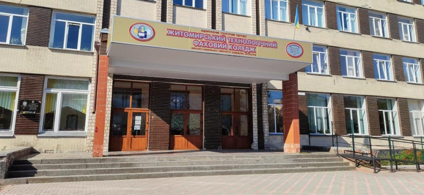
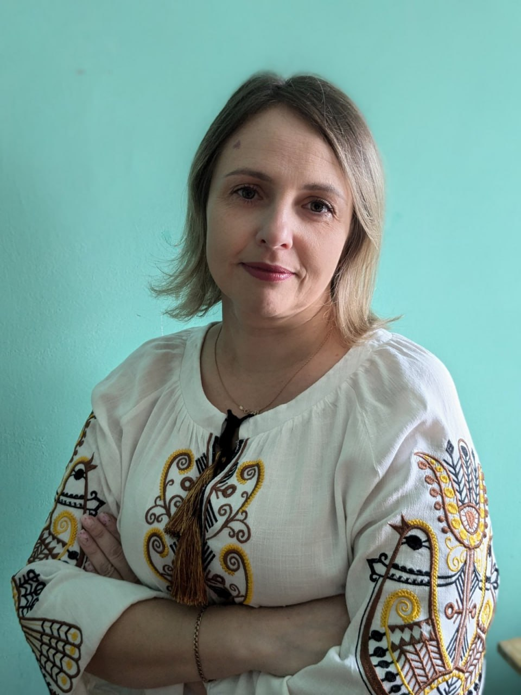

Граматика
Правила та вправи для впевненого письма й мовлення.
Англійська мова · ВСП ЖТФК КНУБА
Інтерактивні завдання та навчальні матеріали з англійської мови в одному місці.

Що тренуємо
Чотири ключові навички, з яких складається впевнене володіння мовою.
Правила та вправи для впевненого письма й мовлення.
Нові слова, вирази та закріплення через практику.
Підготовка до діалогів і розмовної практики.
Розвиток розуміння англійської на слух.
Про коледж
Вітаємо вас у Житомирському фаховому технологічному коледжі — закладі освіти, де традиції поєднуються із сучасністю, знання — з практикою, а студентські мрії перетворюються на професійні цілі!
Традиції з 1911 року
Житомирський фаховий технологічний коледж — це місце, де молодь отримує не лише якісну освіту, а й можливість розкрити свої здібності, знайти однодумців, розвинути таланти та зробити перші кроки до успішного майбутнього.
Наш коледж — це багатогранний освітній простір, у якому створені умови для професійного, інтелектуального й творчого розвитку студентів. Освітній процес спрямований на формування компетентних, відповідальних і конкурентоспроможних фахівців, здатних відповідати вимогам сучасного ринку праці.
Особлива гордість коледжу — наш педагогічний колектив. Це професіонали, які щодня вкладають свої знання, досвід і душу в навчання та виховання молодого покоління. Викладачі використовують сучасні освітні технології, інтерактивні методи навчання, заохочують студентів до дослідницької діяльності, творчості та самореалізації.
Студентське життя в коледжі — це не лише лекції та практичні заняття. Це цікаві зустрічі, тематичні заходи, конкурси, конференції, спортивні змагання, волонтерські ініціативи та спільні проєкти. Кожен має можливість проявити себе, відчути підтримку колективу й стати частиною великої студентської родини.
Ми пишаємося нашими студентами, їхніми досягненнями, наполегливістю, активністю та прагненням до нових вершин. Адже саме молодь є майбутнім нашої країни, її інтелектуальним і професійним потенціалом.
Житомирський фаховий технологічний коледж — це більше, ніж заклад освіти. Це місце, де народжуються ідеї, формується характер, відкриваються таланти та закладається фундамент майбутнього.
Обираючи наш коледж, ви обираєте знання, професіоналізм, розвиток і нові можливості!
Житомирський фаховий технологічний коледж — твій старт до успішного майбутнього!
Про ресурс
Сайт об'єднує інтерактивні завдання та навчальні матеріали з англійської мови. Контент оновлюють викладачі без редагування коду.
Каталог завдань Wordwall із пошуком і фільтрами за категорією та рівнем.
ПрактикаПідручники, граматика, словники, аудіо та корисні посилання.
МатеріалиІнтерфейс сайту доступний двома мовами.
Введіть слово з назви чи опису — список оновиться миттєво.
Оберіть категорію або тип матеріалу та рівень від A1 до B2 — фільтри поєднуються між собою і з пошуком.
Кнопки UA / EN змінюють мову інтерфейсу без перезавантаження сторінки — спробуйте просто тут.
Команда
Викладачі англійської мови Житомирського фахового технологічного коледжу.

Викладач, спеціаліст першої категорії
Спеціаліст вищої категорії, викладач-методист
Викладач, спеціаліст першої категорії